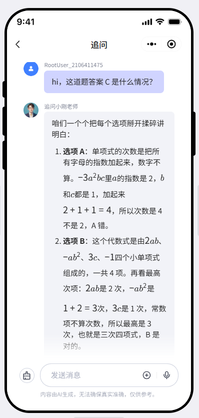
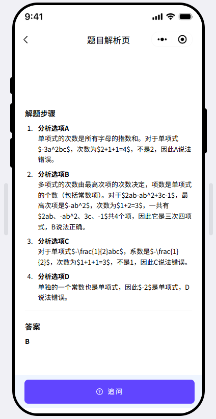
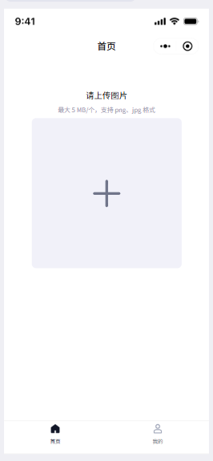
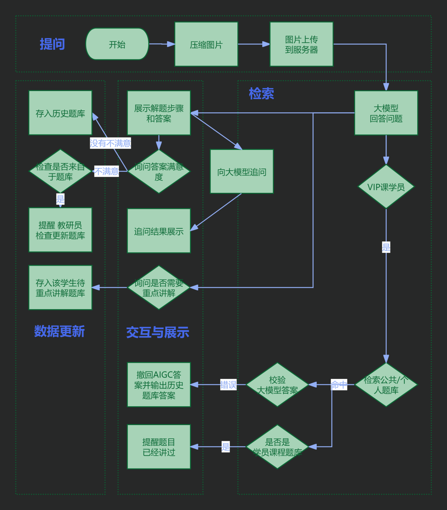

Product snapshot
不是“给答案”，而是把答疑变成可追踪的学习数据。
公司快乐学教育集团
我的角色调研 / PRD / AI 策略 / 监控
调研样本访谈 5 人 + 问卷 102 份
项目结果约 400 名学员使用
快乐学教育集团 · AI 产品助理
从学生作业求助场景出发，设计机构内嵌式 AI 拍搜答疑产品
该项目内嵌在学生学习 App 中，优先以初二数学为 MVP，帮助学生在作业场景中获得答案解析，同时将搜题行为沉淀为学情数据，辅助老师备课与后续复习服务。
Product snapshot
Business Context
快乐学教育集团以 1v1 学科培训为主要业务，初中数学是核心场景。学习机研发部希望探索 AI 在教学服务中的落地方式：让学生日常作业中的疑难题能够被识别、解答、记录，并为老师备课提供依据。
机构已有大量在读学生，数学补习占比较高，具备从真实学习场景中验证 MVP 的基础。
AI 作业助手不是独立工具，而是嵌入学生原有学习 App，与课程服务产生连接。
MVP 阶段收窄到初二数学，先跑通拍照上传、答案解析、追问与数据沉淀闭环。
User Problem
因此产品定位不能停留在拍照搜题本身，而要把答案解析、AI 追问、课程题库、老师备课后台串成一条教学服务链路。
问老师“不敢”，问家长“不会”，问同学“不好意思”，作业场景里的即时帮助很难保障。
部分学生认为拍搜像“作弊”，需要通过课程设计与产品表达降低负担。
用户想把题目转录到错题本，但手工操作困难，导致学习过程无法持续追踪。
Research & Decision
我在 PRD 中将用户分层为“抄答案为主”“自学为主”“自学与抄答案并存”，并结合手机可得性与拍搜习惯，推导 MVP 的真实可触达用户。
以机构在读学生为样本，观察真实作业场景下的求助方式与拍搜使用习惯。
调研显示，自学为主与自学/抄答案并存的人群合计约 60%，具备转向“自学导向拍搜”的可能。
结合移动设备可得性与学习意愿，判断在读学员中约 30% 有机会按照课程要求使用数学拍搜。
MVP Scope
学生进入 App 后拍照上传题目图片，降低首次使用门槛。
模型理解题目图片，输出步骤化解析和答案。
前端展示解题步骤、答案和追问入口。
学生可继续问“这一步为什么”，从单次答案进入理解过程。
VIP 分支接入公共/个人题库，对 AI 答案进行校验和替换。
搜题日志沉淀到学生档案，辅助老师备课。
Product Solution



AI Workflow
PRD 中最核心的设计是“双引擎策略”：大模型负责快速解题，题库负责校验与纠错，前端根据校验结果决定展示、撤回或替换答案。
学生上传题目图片，前端压缩后传入策略模块。
识别题目，输出解析、答案、题目文本与异常标记。
VIP 分支检索公共题库与个人题库，获得标准答案。
若对比错误，则撤回 AI 答案，展示题库答案与解析。

Validation & Metrics
| 评测/监控对象 | 指标 | 目的 |
|---|---|---|
| 上线前效果评测 | 100 条答疑图片样本；答案正确性、解析正确性、排版美观 | 确认 AI 输出能达到可用标准，任何一项出错即为 badcase。 |
| 答案页 | PV / UV、停留时长、返回/追问/关闭 App 行为 | 判断学生是否阅读解析，是否进入进一步学习动作。 |
| 追问页 | PV / UV、停留时长、追问行为 | 观察学生是否把工具用于理解，而不只是拿答案。 |
| 速度感知 | 上传时间、服务端接收时间、解题开始/结束输出时间 | 定位慢点，确保 90% 开始响应时间在 5 秒内。 |
Result & Reflection
项目按时上线，并验证了机构自有 AI 答疑工具的基础可行性；但实际渗透率低于预期，部分学生认为已有作业帮等替代工具，使用粘性一般。
这让我意识到，教育场景里的 AI 产品不能只靠“功能可用”，还需要和课程体系、老师反馈、错题复习、学情分析形成更强的闭环，否则用户会自然回到已有工具。